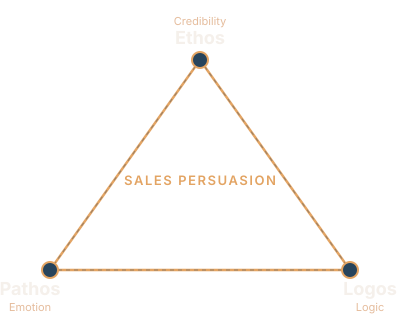
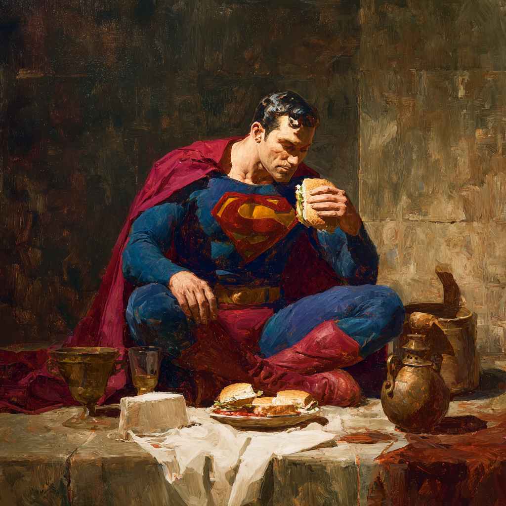
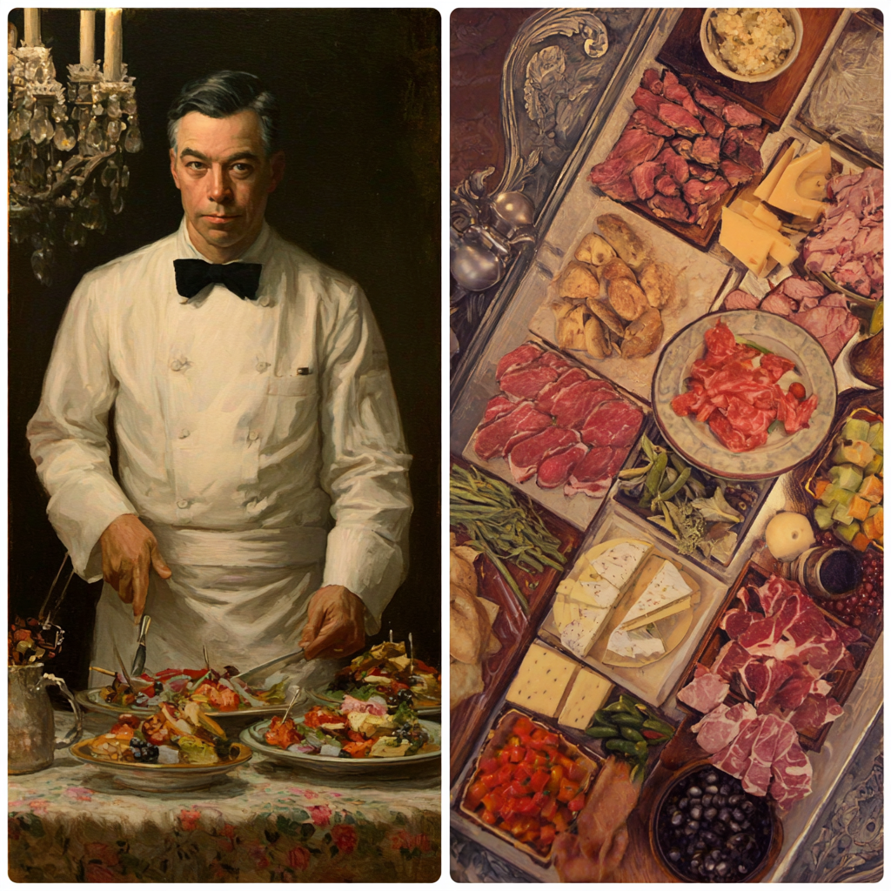

Engineering Trust & Leading Clients
A Codeable Skillset Chat
Hudson Atwell
Partner, Client Success Manager @ Codeable.io
My Background
- Building WordPress plugins since 2009
- Completed 100+ tasks as an expert from 2017 to 2019
- Working internally with Codeable since 2019 (7 years)
- Held every role in customer support
- Currently co-manages the Client and Partner Success Divisions
How can I help?
- Reviewed thousands of Codeable projects
- Worked closely with hundreds of experts and clients
- Built a clear understanding of what successful outcomes look like from both sides
- Offer practical insight into how experts win and keep their edge
What You Will Learn Today
- ARC I - IMPROVED ACQUISITION STRATEGIES
Concepts to strengthen how you acquire clients, stand out amongst peers, and win projects - ARC II - IMPROVED RETENTION STRATEGIES
Techniques to improve long term client loyalty through presentation and value delivery - ARC III - IMPROVED BUSINESS PLANNING
Mentalities to engineer opportunity through organization-driven mindsets
We will be reviewing several practical writing techniques that systematically build trust and reduce client hesitation
- The Rhetorical Triangle -a simple framework for writing effective and persuasive engagements
- Mirroring & Expectation Management -techniques that reinforce trust
These techniques, if applied to your writing skills, should help signal competence and inspire confidence

The Three Appeals of the Rhetorical Triangle
- Ethos -Appeals to Credibility
- Pathos -Appeals to Emotion
- Logos -Appeals to Logic
Ethos
Inspires Credibility and Leadership
Traditional Appeals
- Citing personal experience
- Citing awards or credentials
- Citing past reviews
Codeable Appeals
- Professional tone
- Perfectly structured communications
- Highlighting platform credibility
- Advising clients they can review expert profiles
- Highlighting that we are all experts and capable to take on the work
These are all acceptable appeals to ethos/credibility when writing an engaging message.
Pathos
Appealing to human emotion
- Identify pain-points
- Show empathy
- Consider being complimentary
- Portray what success looks like
- Offer assurance that this is within capability
Logos
Appealing to Logic
- Being attentive to questions asked by the client
- Asking good questions yourself
- Describing the problem clearly
- Using specific data or metrics
- Setting clear expectations
Example: Ethos, Pathos, Logos in Action
“Welcome to Codeable, and thanks for taking the time to describe your issue. You’re in excellent hands here. I noticed you asked about examples of past work. On Codeable, you can explore each expert’s experience directly through their profile. Simply click a profile photo to review background, history, and project examples.”
“I understand how frustrating a broken checkout must be, especially when it directly affects your revenue. You’ve clearly put a lot of care into building this store, and it shows. We can absolutely get this resolved and have your customers completing orders again smoothly.”
“The first step would be to replicate the issue in staging and confirm whether the conflict is theme or plugin related. From there, we can define scope and timeline clearly. Do you happen to know if any plugins or the theme were updated around the time the issue started?”
Improper Uses to Avoid
Improper Ethos
- Self promotion
- Over use of “I” rather than “Royal We”
- Basically anything Codeable will not permit
Improper Pathos
- Pressuring the client
- Fear based urgency
- Emotional manipulation
Improper Logos
- Asking questions already answered
- Ignoring provided details
- Over diagnosing or giving away implementation
Mirroring & Expectation Management
Mirroring
Pay close attention to:
- Writing style
- Length of message
- Facts in description
- Questions being asked by the client
- Sense of urgency
Mirroring is not a rigid science. Look for opportunities where mirroring makes sense, but it’s okay to be asymmetrical.
Consider mirroring a quality control exercise when double checking your writing.
Expectation Management
- Expectation management starts small
- When your projections are accurate, trust is built
- When self-set expectations are not met, trust erodes
- The more trust you garner over time, the healthier your relationship is and the more effective your leadership
- A trust-filled relationship makes clients more open and receptive to your suggestions
Between mirroring and expectation management, expectation management stands out as the more critical.
A Powerfully Simple Framework
Why is it called the Sandwich Method?
- Opening PDF - The foundational bread.
- A branded document delivered before work begins that sets expectations and builds confidence.
- Work Execution - The filling.
- The actual delivery of services as agreed upon.
- Closing PDF - The top bread.
- A branded document delivered upon completion that reinforces value and opens doors.
Bread.
What goes in an opening PDF?
- Project goals and client pain points
- Deliverables and milestones
- Out of scope clarifications
- Assumptions and constraints
- Dependencies and client responsibilities
- Timeline expectations
- Success criteria
- Communication policy
- Establishes shared understanding before commitment
Signals professionalism and structured thinking
The Middle Part
Deliver. The. Work.
- Perform agreed scope as defined in Opening PDF
- Use structured scope as reference point
- Follow communication policy
- Document decisions and tradeoffs
- Maintain alignment with success criteria
“There’s value in this meal”

More Bread
What goes into your closing PDF?
- Summary of work completed
- Description of delivered outcomes and benefits
- Notes on decisions or tradeoffs made
- Confirmation of scope completion
- Recommended next steps or opportunities
- Reinforces value at moment of completion
- Creates natural conversation for expansion
- Provides shareable artifact that propagates your branding (it's good marketing)
Delivered upon completion, highlighting the value added
Why the Sandwich Method Works
- Formalizes communication at critical moments
- Improves clarity and professionalism
- Increases conversion rates
- Creates natural upsell opportunities
- Strengthens client relationships
- Generates marketing assets that can be shared with stakeholders (and beyond)
The Power of the Uniform
A well structured and branded PDF:
- Signals professionalism and preparation
- Conveys belonging to a trusted organization
- Competence through visual consistency
- Generates an aura of caring, inspiring confidence in your work
Do your best to look good.
Although looks aren't everything, they can help you deliver your message and create a positive impression on your customer.
Do you know who else has aura?
Goku
Be like Goku.
Do you know who else cares about presentation?
Pilots
And people trust them with their lives.
Upsells and Natural Timing
PDFs offer natural upsell opportunities
- (Moving Metal) Strike when the iron is hot. Expand value at natural inflection points.
- (The Restaurant Experience) Offer options, not pressure
- (Brochure) Future improvements feel like opportunities, not sales


Closing PDF creates perfect moment for recommendations
The Story of the Stone Sorter
A man cleared a stony field with great care to get it ready for planting:
- First, he gathered the largest stones into one pile
- Then smaller stones into another pile
- He continued until he had ten organized piles of similar-sized stones
His neighbors laughed: “Look at the fool fussing with his stones!”
They simply tossed all their stones into one ordinary heap when they cleared their fields.
The Builder Arrives
A builder passed by and saw the ten organized piles:
- He immediately bought all the stones for 20 pieces of silver
- The builder setup camp for the evening to have the stones loaded into his caravan. He was on his way to the city for a large building project.
The farmer’s neighbors rushed over:
“Look here, builder! We have similar stones from our work and we can sell them to you as well.”
The Builder’s Response
“Your stones I would have to first sort out, which would take me a great deal of effort, and time, which I don’t have. These here are already sorted, just as I need them now. I would rather overpay for these than accept yours free!”
The neighbors tried to sort their stones afterward, working late into the evening while the builder loaded stones and camped for the night. But it was too late. The builder had what they needed and promptly left in the morning. The neighbors had exerted much effort for nothing.
The Lessons
“Always try and be as organized as possible. When someone then comes with an offer, they are sure to always go for the best order.”
A later effort is often in vain. Start looking for opportunities to organize well early.
People will pay premiums for well-organized material.
Tools for Organization
- ClickUp -Project management and task tracking
- Evernote / Joplin -Note-taking and documentation
- Private Comments Area -Codeable’s built-in notes
- Notepad++ -Simple text documentation
- Any system that helps you sort your “stones”
Part 2 - Business Forward Mentality
Always Be Closing?
- The traditional sales mindset:
- Transactional thinking
- Short-term orientation
- Pressure to “close the deal”
- Getting them to fund a proposal
Works for acquisition. Sets us up for another concept that will help with scaling and maximizing relationship potential...
Always Be Opening
- •Open new pathways for clients
- •Identify growth opportunities
- •Present ideas at the right time
- •Build long-term relationships
What We’ve Learned Today
- The Rhetorical Triangle -A QC mechanism for persuasive communications
- The Sandwich Method -Religiously using PDFs to create long lasting artifacts that project and confirm value, provide leadership through upsells, and promote your brand
- The Stone Sorter -Organized preparation meets opportunity
- Always Be Opening -Creating opportunities through service
Recap: The Rhetorical Triangle
- Ethos -Appealing to credibility
- Pathos -Appealing to emotion
- Logos -Appealing to logic
Selling competence through attentive writing.
The Power of Mirroring
- Identify and answer all questions directly
- Identify and respond to their pain points and goals
- Attempt to measure their writing style for clues to how they like to be engaged with
- Demonstrate that nothing was overlooked
- Build confidence through comprehensive understanding
Make the effort to be as attentive as possible (soft skills).
Expectation Management as Leadership
- Define clear next steps
- Reduce uncertainty and build confidence through leadership
- Promise what you can deliver, deliver what you promise
Expectation management is your greatest tool as a project manager and communicator. It might be a top 5 life-in-general tool, and you should practice it anywhere you are required to be responsible over something.
Be Listful, Not Listless
- Track client goals and pain points
- Track upsell opportunities
- Document patterns you notice
- Sort opportunities by relevance
- Prepare for when the builder arrives
Organization is not overhead -it’s opportunity creation (Parable of the Farmer Who Organized his Stones).
Look Your Best While Doing It
- Format influences perception
- Organized information feels safer
- Visual discipline builds authority
- Professional consistency creates trust
Apply the sandwich method. It’s overly simple and super powerful.
Always Be Opening
- Every project is an opportunity to open the next one
- Opening is a mentality, do not neglect it.
- Scope creep, if handled correctly, is not a pain -it’s an opportunity.
- Closing PDFs plant seeds for future work
You don’t have to act on every new opportunity, but you should definitely save it for when the moment is right.
The Sandwich Method in Action
- Opening PDF -Professional first impression, clear expectations, builds confidence
- Do the work.
- Closing PDF -Reinforces value, documents outcomes, opens doors for future opportunities
PDFs as Word-of-Mouth Marketing
- They get shared with stakeholders
- They showcase your professionalism to others
- They propagate Codeable branding
- They become marketing materials you don’t pay for
Every PDF is a potential introduction to your next client. A client will show a great proposal to other stakeholders, and these stakeholders may have their own separate needs.
Thanks for paying attention.
🏆
A reader is a leader
Credits
Lecture prepped by Hudson Atwell
Custom HTML + JS slideshow developed with Claude Code
All images generated by Midjourney
This slideshow workspace can be forked from:
github.com/atwellpub/engineering-trust-while-leading-clients
Please leave a star if you learned something